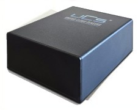
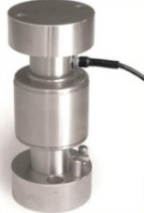
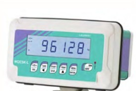
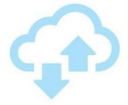

SensBELT
SensBELTStop paying for air on your conveyor
Your belt cannot tell 500 tonnes an hour from zero. Your electricity bill can.
PATENTED TECHNOLOGY · EP 4 524 526The most expensive machine that does nothing
WITHOUT SensBELT
The belt runs on after the last truck dumps — unnoticed for 45 minutes.
Three to four times a shift. A 75 kW drive turning air.
No way to check the belt scale without sending a technician.
WITH SensBELT
An empty belt is detected automatically — shutdown signal after 5 minutes.
Calibration drift is tracked continuously — no site visits.
Throughput verified from your phone.
A quarry found 847 hours of ghost running in one year
Aggregate quarry, two belt scales feeding a crusher. The control room saw ON/OFF, nothing else.
2 beltsBelt #1 ran empty 2.65 hours a day. Nothing looked broken, so nobody looked.
847 hEnergy burned on air, plus 14 months of extra wear — a €38,000 belt replaced early.
€11,430No load for 5 minutes → shutdown signal to the VFD. Ghost running gone by week 2.
≈ 0 h
Plugs into your existing belt scale




See every tonne, every minute
“Tuesday 14:00–16:45 — the belt ran at 12% capacity. Why?”
Historical trends reveal inefficiency patterns your control room cannot see.
Is your belt scale still accurate?
Your indicator says “342 t/h”
Is it right? SensBELT checks continuously, so you do not have to send someone to find out.
36 days to full payback
Based on verified site data. Your figures depend on your own drive power, running hours and electricity price.
Assumptions
- Drive power
- 75 kW
- Ghost running
- 3 h/day × 320 days
- Electricity price
- €0.18/kWh
Prove it on your busiest conveyor